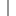

Data Model version 2.0.b3
| Acknowledgements |
| Diagram | Class Map | Attribute Map | Method Map | Help | License |
| Home | Package | Class: { prev | next } | Attribute | Method |
|
Data Model version 2.0.b3 |
|
Inheritance:
   memops.api.Implementation.MemopsObject
memops.api.Implementation.DataObject
ccp.api.general.Method.Method
memops.api.Implementation.MemopsObject
memops.api.Implementation.DataObject
ccp.api.general.Method.Method
Details:
|
Inherited Attributes (not in package): applicationData, className, fieldNames, inConstructor, isDeleted, metaclass, packageName, packageShortName, qualifiedName |
Inherited Attributes (not in package): access, activeAccess, root, topObject |
Attribute Methods (in package)
|
|||||||||||||||||||||||||||||||||||||||||||||||||||||||||||||||||||||||||||||||||
Class Methods (in package)
|
Factory Methods (in package)
|
Other Methods (in package)
|
Appendix
|
Data Model Version 2.0.b3 |
Go to Top |
Work done by the CCPN team. |
www.ccpn.ac.uk |